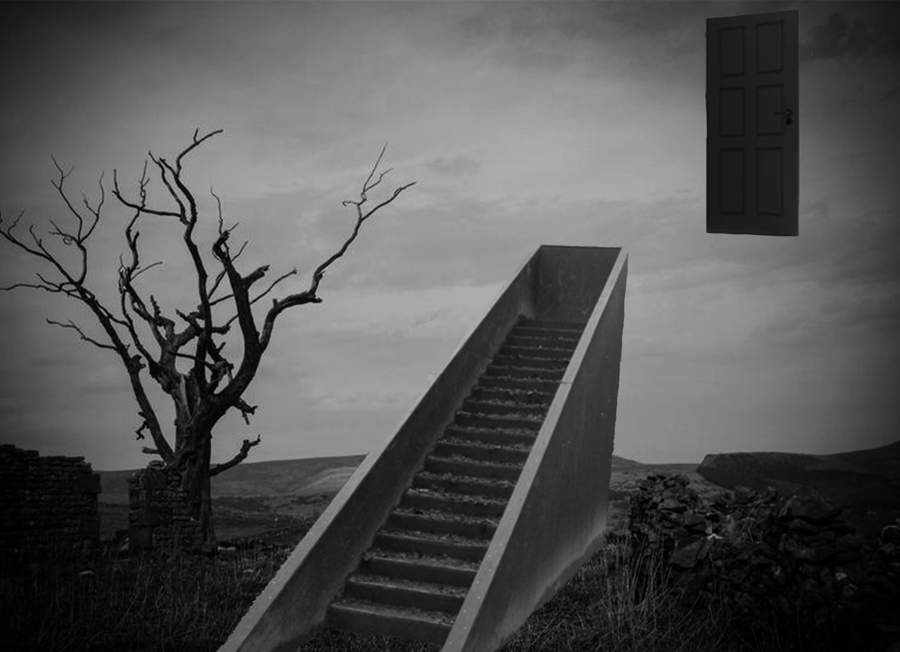
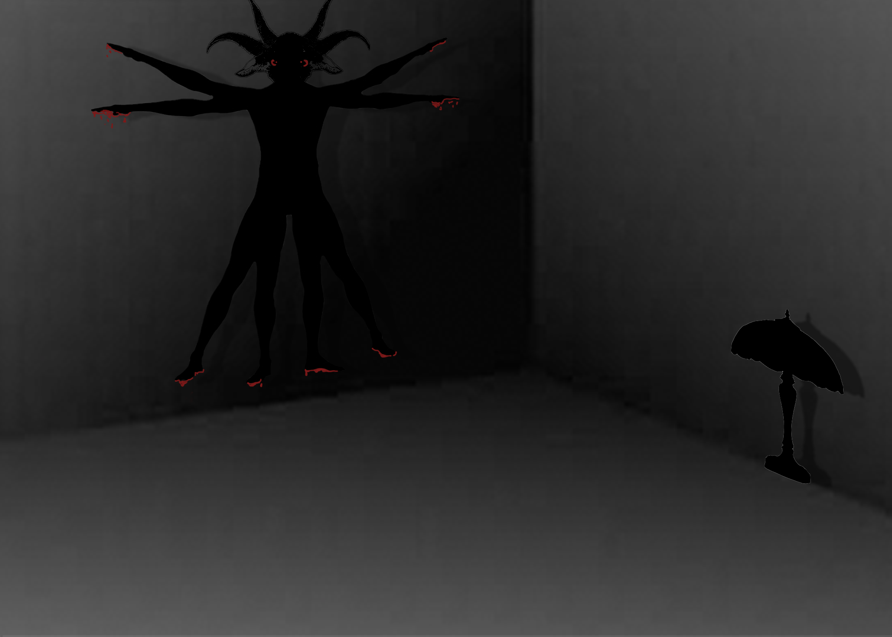
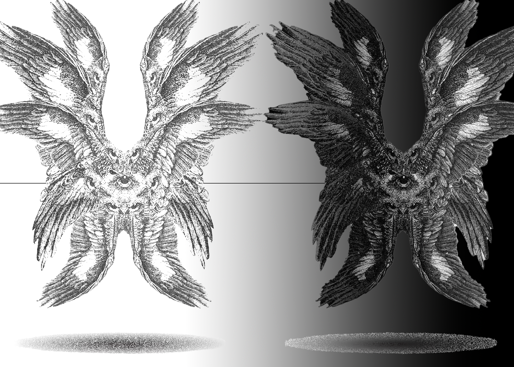
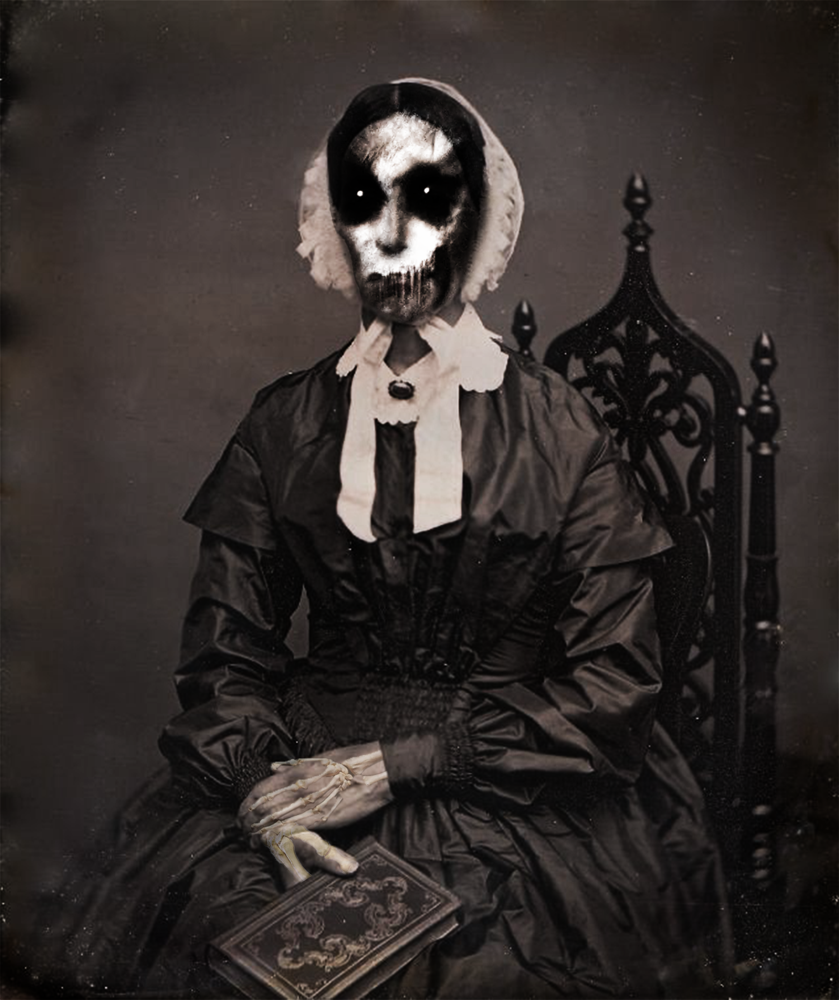

Digital works
Background: I made these in my photoshop class the first semester of Freshman year. It was my first time ever using photoshop, but I really love all of these pictures. I don't know exactly where I came up with the idea of these, but I clearly love the darker aesthetic.

Title: What is that thing?
Title: Never Ending
Title: Backroom
Title: Together at last

Title: Gathering
Title: Victoria